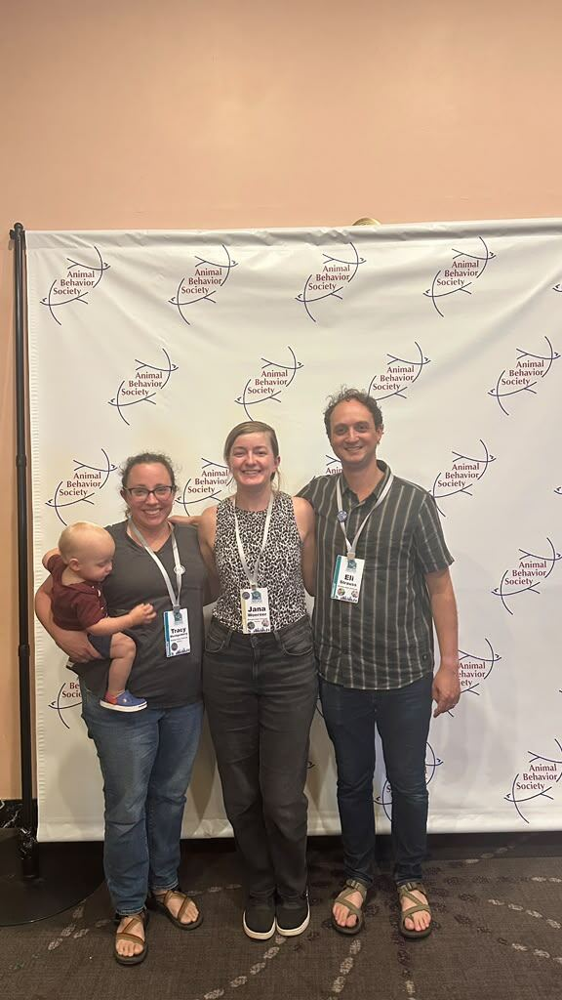
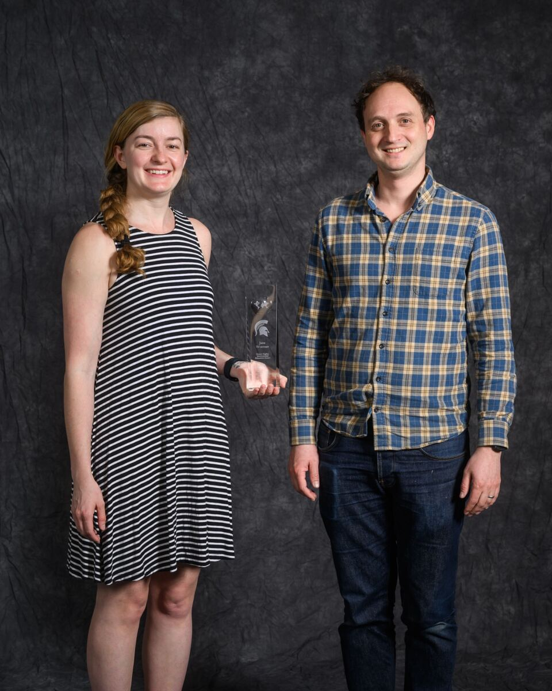
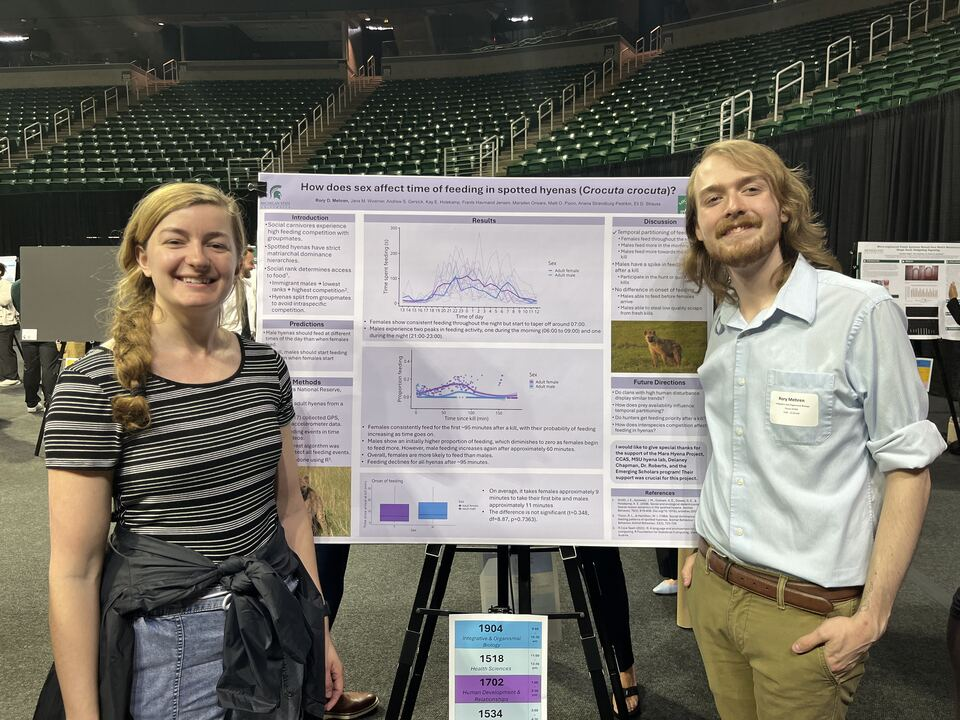
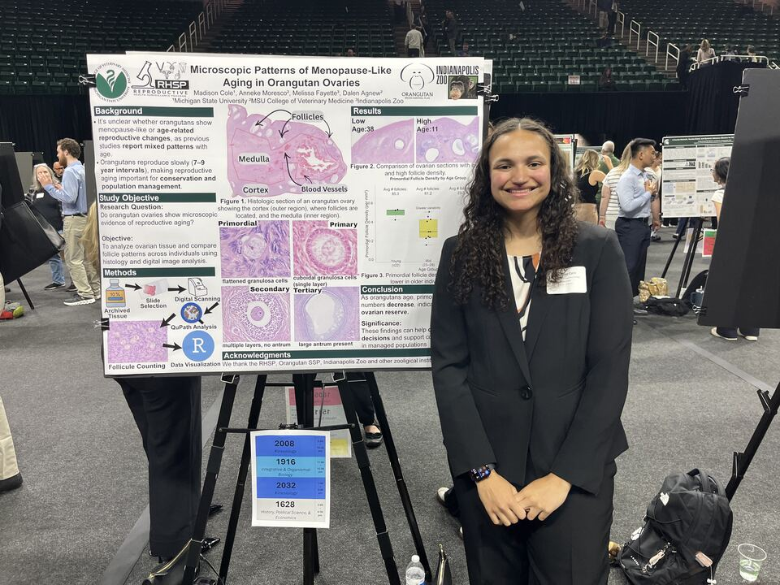
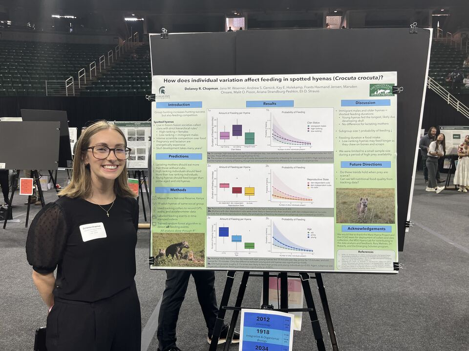
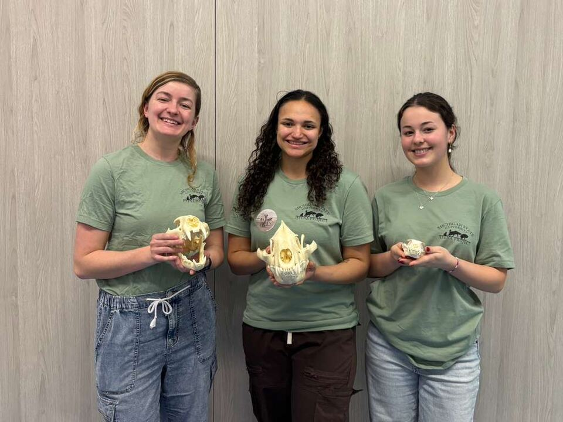
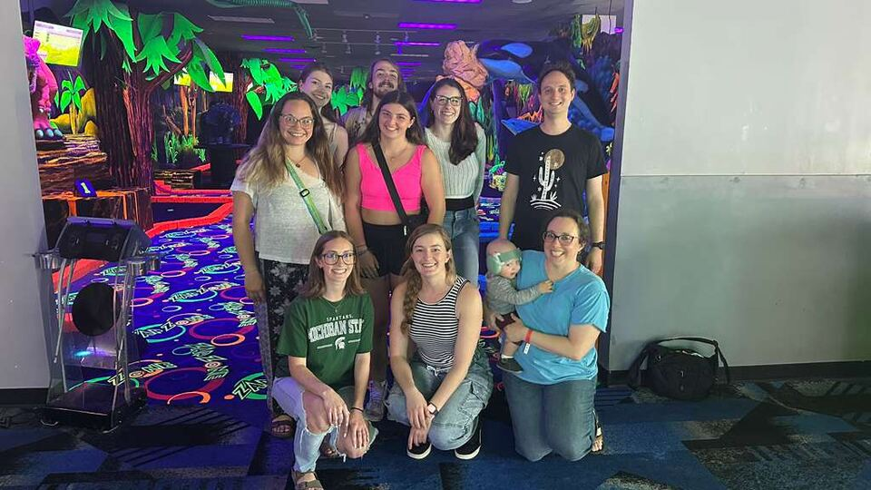
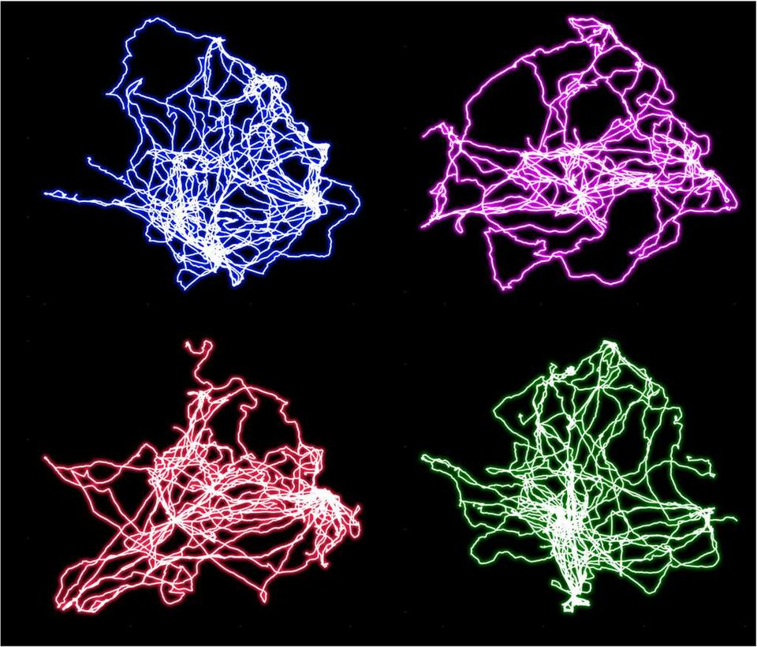
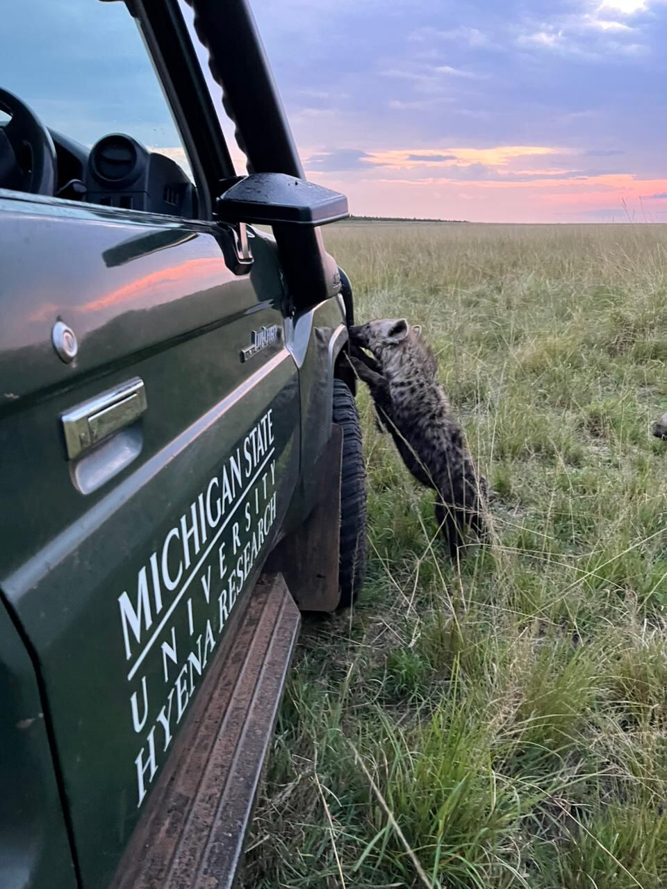
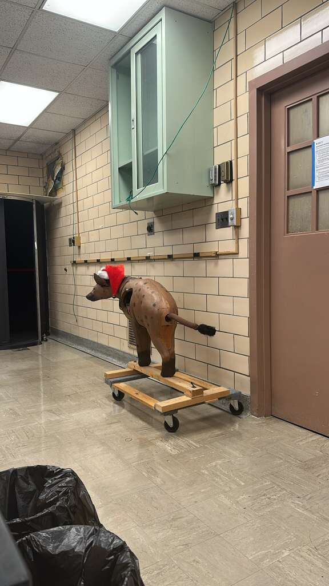

News

July 2026
— Jana, Tracy, Eli, and Asa all attend and give talks at the Animal Behavior Society meeting (Asa's talk was not on the official schedule)

May 2026
— Jana wins the Homer Higbee International Teaching award. Congrats Jana!



April 2026
— Rory, Madison, and Delaney present their research at UURAF.

April 2026
— Jana, Madison, and Isa teach kids about hyenas at Girls Math and Science Day.

April 2026
— The Strauss-Montgomery labs celebrate the end of the academic year at Zap Zone.

March 2026
— Jana submits hyena movement trajectories for the MSU EEB Art in Science Prize.

October 2025
— A cub from the Serena South clan wants to get more involved with the research.

September 2025
— The lab sets up in temporary space in Giltner Hall.